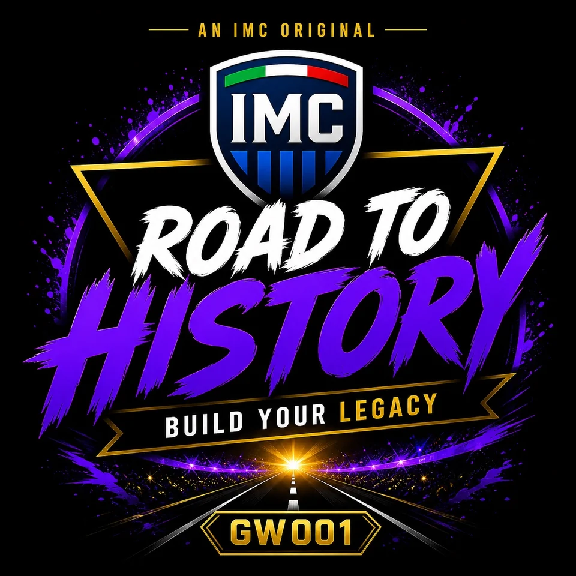
GW001 · IMC WORLD
Road To History
GAME WORLD ID 468172
ONE COMMUNITY. ONE IDENTITY.
Italian Masters Club è una community composta oggi da 60 manager italiani di Soccer Manager, uniti dalla competizione, dalla condivisione e dalla volontà di costruire qualcosa di unico.
Creiamo Game World personalizzati, condividiamo strategie ed esperienze e ci aiutiamo a crescere. IMC è anche un ecosistema digitale proprietario: sito ufficiale, applicazione dedicata e Nexus, il cuore tecnologico della community.
Utilizziamo dati e intelligenza artificiale per raccogliere risultati, costruire classifiche, raccontare storie, creare contenuti e alimentare i feed dei nostri mondi.
Il nostro obiettivo è costruire uno zoccolo duro capace di rappresentare il meglio dell’élite italiana di Soccer Manager.
NINE WORLDS. INFINITE RIVALRIES.
Gestiamo mondi proprietari, partecipiamo ai mondi ufficiali di Soccer Manager e presidiamo alcuni dei Gold Game World più competitivi con una forte presenza di manager IMC.

GAME WORLD ID 468172
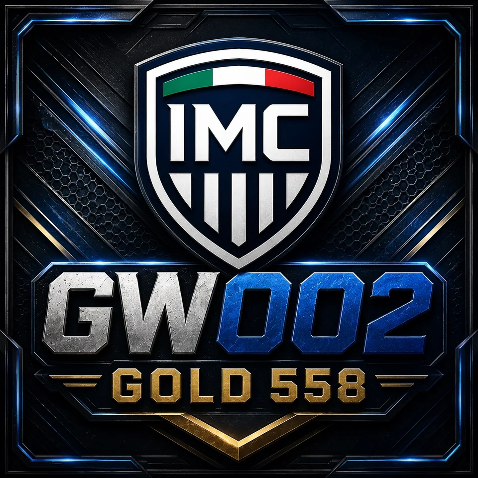
GAME WORLD ID 467635
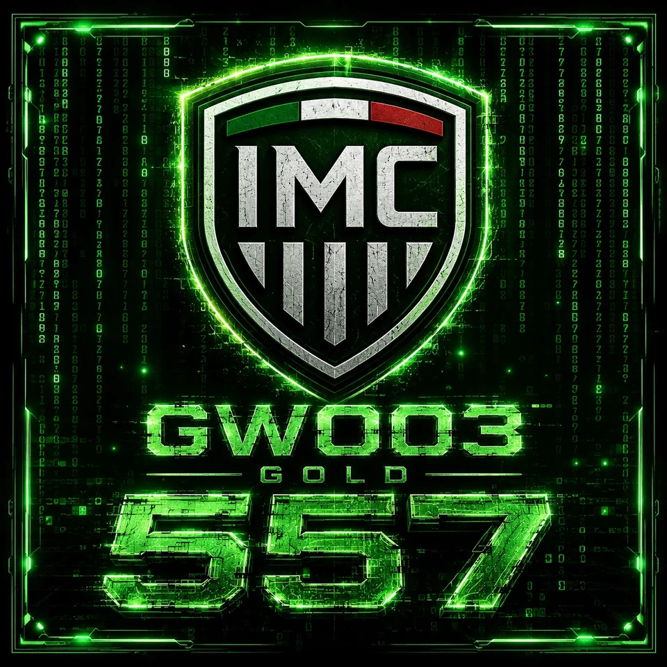
GAME WORLD ID 467488
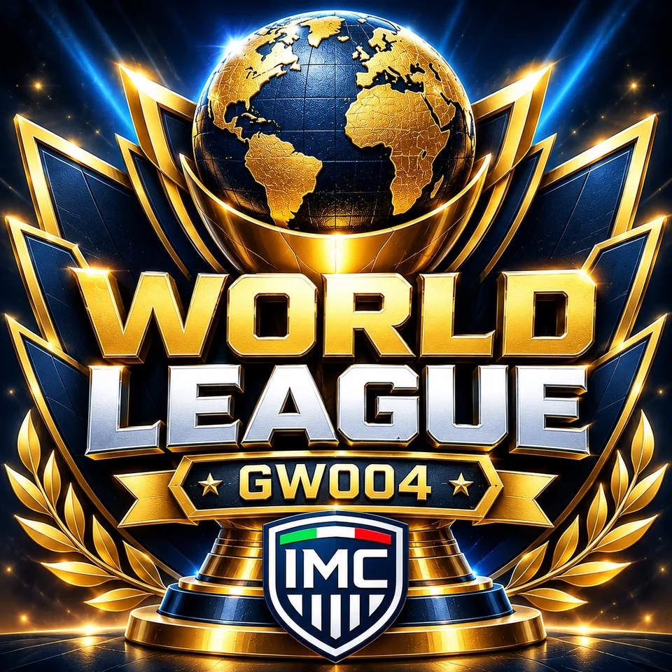
GAME WORLD ID 29871
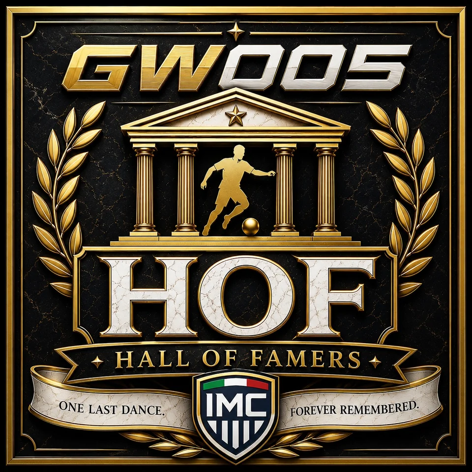
GAME WORLD ID 468194
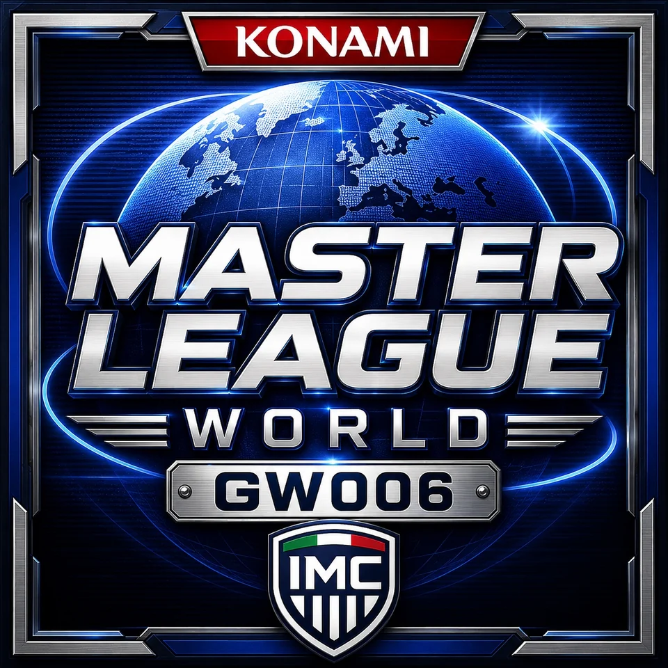
GAME WORLD ID 468156
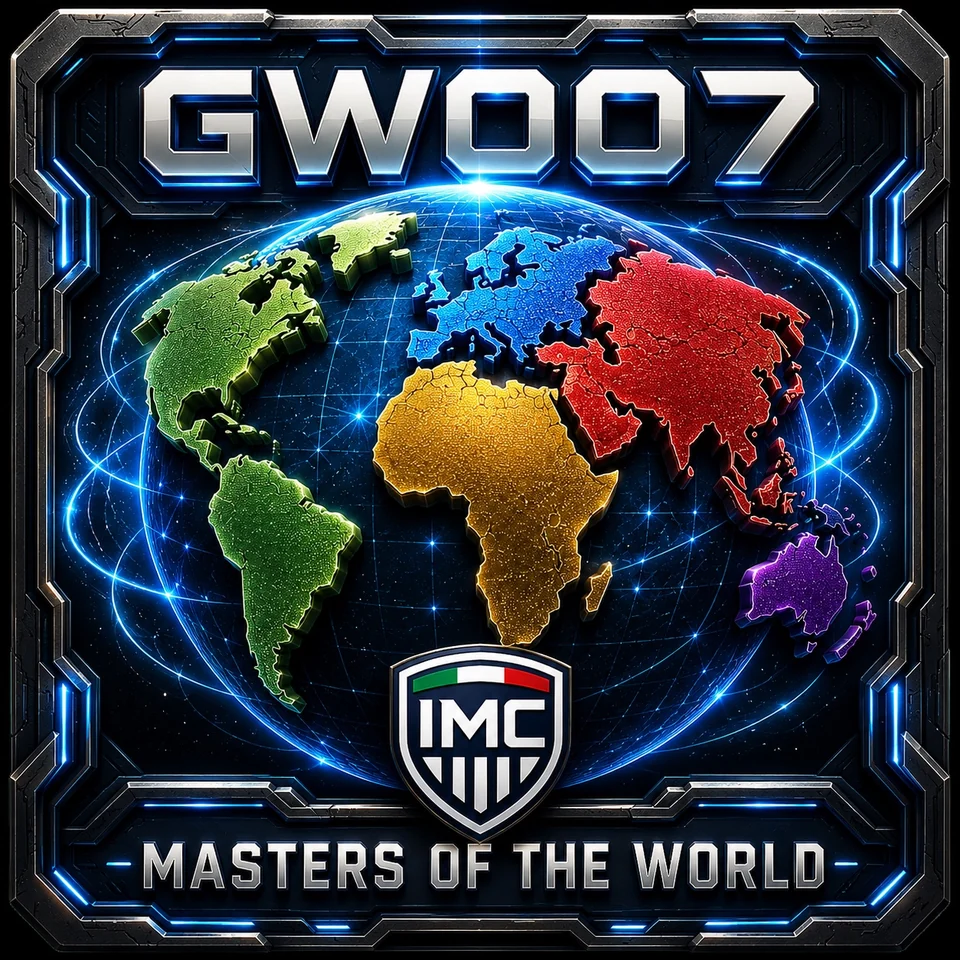
GAME WORLD ID 140637
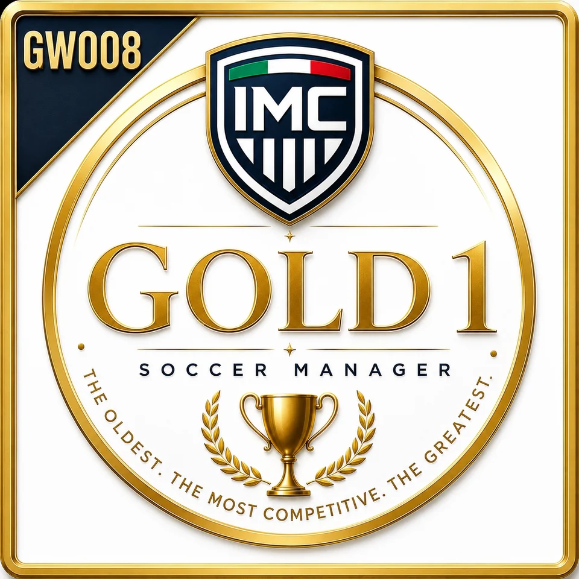
GAME WORLD ID 668

GAME WORLD ID 468332
MORE THAN THE GAME CAN REMEMBER.
Nexus è il cuore tecnologico di IMC: una piattaforma proprietaria che trasforma l’attività dei Game World in dati, statistiche e storie.
Conserva e incrocia trofei, carriere, scontri diretti, voti, presenze, gol, assist e medie dei giocatori: una profondità di analisi superiore a quella disponibile direttamente nel gioco.
MEMBERS ONLY · Accesso protetto e associato all’identità Soccer ManagerYOUR JOURNEY. YOUR RANKING. YOUR LEGACY.
Nexus registra i trofei conquistati nei Game World IMC e li trasforma in una graduatoria unica. Ogni vittoria entra nell’archivio e diventa parte della storia della community.
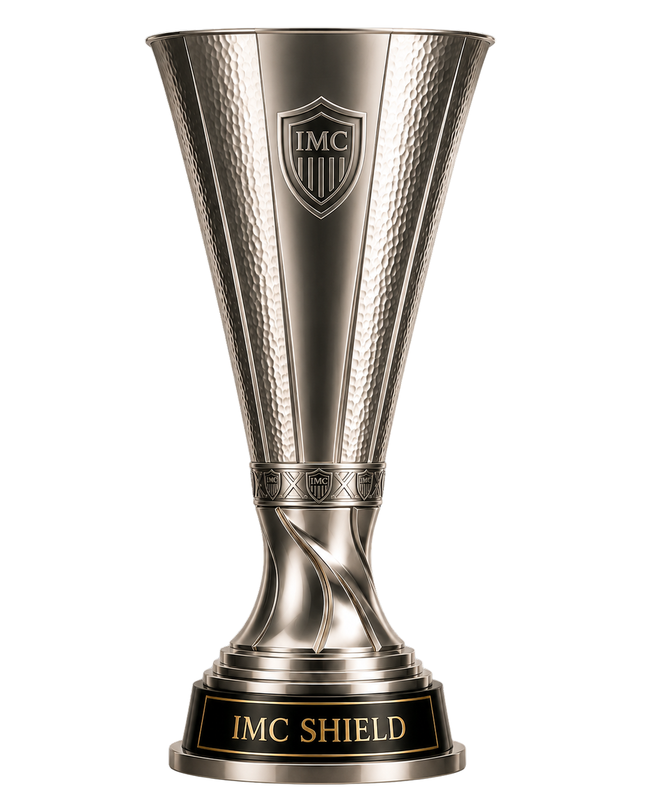
IMC SHIELD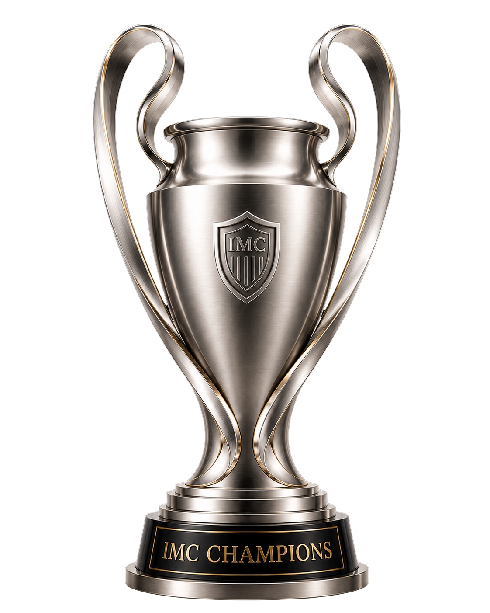
IMC CHAMPIONS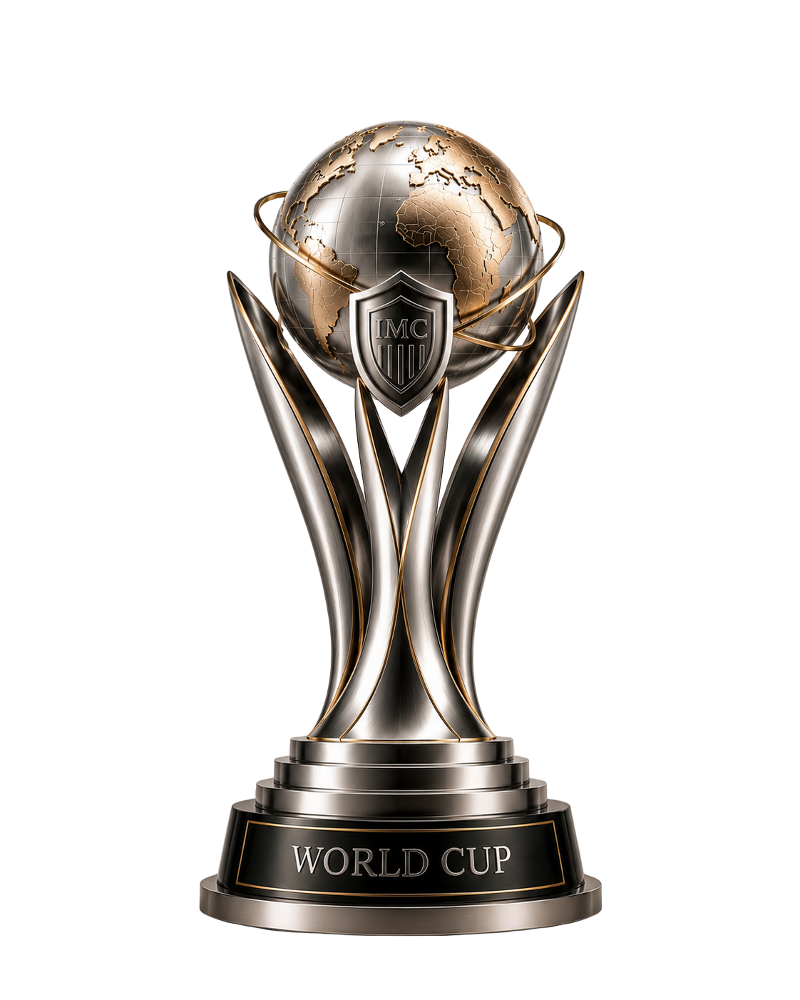
WORLD CUPPLAY. WIN. BUILD YOUR LEGACY.
60 MANAGERS. ONE IDENTITY.
Caricamento del roster ufficiale…
YOU MAY ALREADY BE PART OF OUR STORY.
Ogni mondo pubblicato mostra il proprio Game World ID. Se giochi già in uno di questi mondi, possiamo verificare la tua presenza e farti scoprire la community e Nexus. Se hai uno slot libero, trova il mondo più adatto a te e gioca con noi.
EVERY RESULT HAS A STORY.
News, feed, risultati, prossimi turni, mercato, premi, record e giornali dedicati: IMC trasforma ciò che accade nei Game World in un racconto continuo.